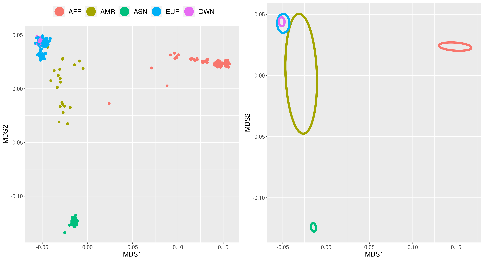

Population Stratifacation¶
Obtaining the 1000 genome reference data set¶
We will be using data from the 1000 Genomes Project for the population stratification step.
You can download using the following command
wget ftp://ftp-trace.ncbi.nih.gov/1000genomes/ftp/release/20100804/ALL.2of4intersection.20100804.genotypes.vcf.gzNote
You will need plink in this section, which can be download from here.
Install the program plink and include its location in your PATH directory, which allows us to use plink instead of ./plink in the commands below. If PLINK is not in your PATH directory and is instead in your working directory, replace all instances of plink in the tutorial with ./plink.
plink --vcf ALL.2of4intersection.20100804.genotypes.vcf.gz --make-bed --out 1000genomes.genotypes
plink --bfile 1000genomes.genotypes --set-missing-var-ids @:#[b37]\$1,\$2 --make-bed --out 1000genomes_nomissing.genotypesDefine Variables to be used in this section¶
input files and variables
FILE_1K=1000genomes_nomissing.genotypes #1000 genomes file
FILE_QC=qcout #file from qc tab
FILE_PRUNEIN=plink.prune.in #snps in approximate linkage equilibrium
GENO=0.02 #snp missingness filter
INDV=0.02 #individual missingness filter
MAF=0.05 #minor allele frequency filter
HWE_CONTROL=1e-6 #hardy weinburg equilibrium filterdefine general file tags
sep="_"
tagbed=".bed"
tagbim=".bim"
tagfam=".fam"
tagmap=".map"
taggenome=".genome"
tag_dot_mds=".mds"tags for filtering 1000genome data
TAG_1kG="1KG"
TAG_GENO="geno"
OUT1="$TAG_1kG$sep$TAG_GENO$sep$GENO"
TAG_MIND="mind"
OUT2="$OUT1$sep$TAG_MIND$sep$INDV"
TAG_MAF="maf"
OUT3=$OUT2$sep$TAG_MAF$sep$MAF
TAG_extract="extract"
OUT4=$OUT3$sep$TAG_extract
TAG_BUILD="samebuild"
OUT5=$OUT4$sep$TAG_BUILD
TAG_REM="removeproblem"
OUT6=$OUT5$sep$TAG_REMtags for filtering QCed data
TAG_QC="QCin"
OUT1_QC=$TAG_QC$sep$TAG_extract
OUT2_QC=$OUT1_QC$sep$TAG_REM
tag_euro="euro"
FILEQCEURO=$FILE_QC$sep$tag_euro
TAG_HWE_CONTROL="hwe_control"
OUTQCEURO=$FILEQCEURO$sep$TAG_HWE_CONTROL$sep$HWE_CONTROL
found="founder"
lowcover="unrelated"
OUTCOVER=$lowcover
tag_mds="MDS"
POPSTRATOUT=$OUTCOVER$sep$tag_mds
tag_pca="PCA"
INPCA=$OUTCOVERQC on 1000 Genomes data.¶
Remove variants based on missing genotype data.
plink --bfile $FILE_1K --geno $GENO --make-bed --out $OUT1plink --bfile $OUT1 --mind $INDV --allow-no-sex --make-bed --out $OUT2plink --bfile $OUT2 --maf $MAF --make-bed --out $OUT3awk '{print$2}' "$FILE_QC$tagbim"> QCFILE_SNPs.txt
awk '{print$2}' "$OUT3$tagbim"> 1kG_temp.bim
plink --bfile $OUT3 --extract QCFILE_SNPs.txt --make-bed --recode --out $OUT4Extract the variants present in 1000 Genomes dataset from your dataset.¶
awk '{print$2}' $OUT4$tagbim > 1kG_SNPs.txt
plink --bfile $FILE_QC --extract 1kG_SNPs.txt --recode --make-bed --out $OUT1_QCChange build on 1000 Genomes data build to match build of HapMap data¶
Note
Look at Liftover tutorial to see how to move data set to another build.
awk '{print$2,$4}' $OUT1_QC$tagmap > buildmap.txt
# buildmap.txt contains one SNP-id and physical position per line.
plink --bfile $OUT4 --update-map buildmap.txt --make-bed --out $OUT5Merge the Map and 1000 Genomes data sets¶
Prior to merging 1000 Genomes data with the data we want to make sure that the files are mergeable, for this we conduct 3 steps:
1) Make sure the reference genome is similar in your data and the 1000 Genomes Project datasets
2) Resolve strand issues.
3) Remove the SNPs which after the previous two steps still differ between datasets
1) set reference genome
awk '{print$2,$5}' $OUT5$tagbim > 1kg_ref-list.txt
plink --bfile $OUT1_QC --reference-allele 1kg_ref-list.txt --make-bed --out Map-adj
# The 1kG_MDS6 and the HapMap-adj have the same reference genome for all SNPs.2) Resolve strand issues
awk '{print$2,$5,$6}' $OUT5$tagbim > 1kGMDS_strand_tmp
awk '{print$2,$5,$6}' Map-adj.bim > Map-adj_tmp
sort 1kGMDS_strand_tmp Map-adj_tmp |uniq -u > all_differences.txtFlip SNPs for resolving strand issues
awk '{print$1}' all_differences.txt | sort -u > flip_list.txt
plink --bfile Map-adj --flip flip_list.txt --reference-allele 1kg_ref-list.txt --make-bed --out corrected_mapCheck for SNPs which are still problematic after they have been flipped.
awk '{print$2,$5,$6}' corrected_map.bim > corrected_map_tmp
sort 1kGMDS_strand_tmp corrected_map_tmp |uniq -u > uncorresponding_SNPs.txt3) Remove problematic SNPs from your data and from the 1000 Genomes.
awk '{print$1}' uncorresponding_SNPs.txt | sort -u > SNPs_for_exclusion.txt
plink --bfile corrected_map --exclude SNPs_for_exclusion.txt --make-bed --out $OUT2_QC
plink --bfile $OUT5 --exclude SNPs_for_exclusion.txt --make-bed --out $OUT6Merge outdata with 1000 Genomes Data¶
plink --bfile $OUT2_QC --bmerge $OUT6$tagbed $OUT6$tagbim $OUT6$tagfam --allow-no-sex --make-bed --out MDS_merge2Perform MDS and PCA on Map-CEU data anchored by 1000 Genomes data using a set of pruned SNPs¶
Download the file with population information of the 1000 genomes dataset.
wget ftp://ftp-trace.ncbi.nih.gov/1000genomes/ftp/release/20100804/20100804.ALL.panelConvert population codes into superpopulation codes (i.e., AFR,AMR,ASN, and EUR).
awk '{print$1,$1,$2}' 20100804.ALL.panel > race_1kG.txtCreate a racefile of your own data.
awk '{print$1,$2,"OWN"}' $OUT2_QC$tagfam > racefile_own.txtsed 's/JPT/ASN/g' race_1kG.txt>race_1kG2.txt
sed 's/ASW/AFR/g' race_1kG2.txt>race_1kG3.txt
sed 's/CEU/EUR/g' race_1kG3.txt>race_1kG4.txt
sed 's/CHB/ASN/g' race_1kG4.txt>race_1kG5.txt
sed 's/CHD/ASN/g' race_1kG5.txt>race_1kG6.txt
sed 's/YRI/AFR/g' race_1kG6.txt>race_1kG7.txt
sed 's/LWK/AFR/g' race_1kG7.txt>race_1kG8.txt
sed 's/TSI/EUR/g' race_1kG8.txt>race_1kG9.txt
sed 's/MXL/AMR/g' race_1kG9.txt>race_1kG10.txt
sed 's/GBR/EUR/g' race_1kG10.txt>race_1kG11.txt
sed 's/FIN/EUR/g' race_1kG11.txt>race_1kG12.txt
sed 's/CHS/ASN/g' race_1kG12.txt>race_1kG13.txt
sed 's/PUR/AMR/g' race_1kG13.txt>race_1kG14.txt
cat race_1kG14.txt racefile_own.txt | sed -e '1i\FID IID race' > racefile.txtPerform MDS¶
plink --bfile MDS_merge2 --extract $FILE_PRUNEIN --genome --out MDS_merge2
plink --bfile MDS_merge2 --read-genome MDS_merge2.genome --cluster --mds-plot 10 --out MDS_merge2data<- read.table(file="MDS_merge2.mds",header=TRUE)
race<- read.table(file="racefile.txt",header=TRUE)
datafile<- merge(data,race,by=c("IID","FID"))
head(datafile)
pdf("MDS.pdf",width=7,height=7)
for (i in 1:nrow(datafile))
{
if (datafile[i,14]=="EUR") {plot(datafile[i,4],datafile[i,5],type="p",xlim=c(-0.1,0.2),ylim=c(-0.15,0.1),xlab="MDS Component 1",ylab="MDS Component 2",pch=1,cex=0.5,col="green")}
par(new=T)
if (datafile[i,14]=="ASN") {plot(datafile[i,4],datafile[i,5],type="p",xlim=c(-0.1,0.2),ylim=c(-0.15,0.1),xlab="MDS Component 1",ylab="MDS Component 2",pch=1,cex=0.5,col="red")}
par(new=T)
if (datafile[i,14]=="AMR") {plot(datafile[i,4],datafile[i,5],type="p",xlim=c(-0.1,0.2),ylim=c(-0.15,0.1),xlab="MDS Component 1",ylab="MDS Component 2",pch=1,cex=0.5,col=470)}
par(new=T)
if (datafile[i,14]=="AFR") {plot(datafile[i,4],datafile[i,5],type="p",xlim=c(-0.1,0.2),ylim=c(-0.15,0.1),xlab="MDS Component 1",ylab="MDS Component 2",pch=1,cex=0.5,col="blue")}
par(new=T)
if (datafile[i,14]=="OWN") {plot(datafile[i,4],datafile[i,5],type="p",xlim=c(-0.1,0.2),ylim=c(-0.15,0.1),xlab="MDS Component 1",ylab="MDS Component 2",pch=3,cex=0.7,col="black")}
par(new=T)
}
abline(v=-0.035,lty=3)
abline(h=0.035,lty=3)
legend("topright", pch=c(1,1,1,1,3),c("EUR","ASN","AMR","AFR","OWN"),col=c("green","red",470,"blue","black"),bty="o",cex=1)
dev.off()
An example bar plot generated using script in
MDS_merged.R
Perform PCA¶
plink --bfile MDS_merge2 --indep-pairwise 50 5 0.5
plink --bfile MDS_merge2 --extract plink.prune.in --make-bed --pca 10 'header' --out PCA_MERGEdata<- read.table(file="PCA_MERGE.eigenvec",header=TRUE)
race<- read.table(file="racefile.txt",header=TRUE)
datafile<- merge(data,race,by=c("IID","FID"))
head(datafile)
pdf("pca.pdf",width=7,height=7)
for (i in 1:nrow(datafile))
{
if (datafile[i,13]=="EUR") {plot(datafile[i,3],datafile[i,4],type="p",xlim=c(-0.05,0.1),ylim=c(-0.1,0.1),xlab="PC Component 1",ylab="PC Component 2",pch=1,cex=0.5,col="green")}
par(new=T)
if (datafile[i,13]=="ASN") {plot(datafile[i,3],datafile[i,4],type="p",xlim=c(-0.05,0.1),ylim=c(-0.1,0.1),xlab="PC Component 1",ylab="PC Component 2",pch=1,cex=0.5,col="red")}
par(new=T)
if (datafile[i,13]=="AMR") {plot(datafile[i,3],datafile[i,4],type="p",xlim=c(-0.05,0.1),ylim=c(-0.1,0.1),xlab="PC Component 1",ylab="PC Component 2",pch=1,cex=0.5,col="orange")}
par(new=T)
if (datafile[i,13]=="AFR") {plot(datafile[i,3],datafile[i,4],type="p",xlim=c(-0.05,0.1),ylim=c(-0.1,0.1),xlab="PC Component 1",ylab="PC Component 2",pch=1,cex=0.5,col="blue")}
par(new=T)
if (datafile[i,13]=="OWN") {plot(datafile[i,3],datafile[i,4],type="p",xlim=c(-0.05,0.1),ylim=c(-0.1,0.1),xlab="PC Component 1",ylab="PC Component 2",pch=3,cex=0.7,col="black")}
par(new=T)
}
abline(v=-0.005,lty=3)
abline(h=-0.005,lty=3)
legend("topright", pch=c(1,1,1,1,3),c("EUR","ASN","AMR","AFR","OWN"),col=c("green","red","orange","blue","black"),bty="o",cex=1)
dev.off()
## awk '{ if ($3 <-0.005 && $4 >-0.005) print $1,$2 }' PCA_MERGE.eigenvec > EUR_samp.txtRun Admixture algorithm¶
Note
You must install the ADMIXTURE software here. If you are running on a conda environment you can install the admixture software using the following command:
conda install -c bioconda admixtureConcatenate racefiles.
awk '{print$1,$2,"-"}' $OUT2_QC$tagfam > racefile_own.txt
awk '{print$1,$1,$2}' 20100804.ALL.panel > race_1kG.txt
cat racefile_own.txt race_1kG.txt| sed -e '1i\FID IID race' > MDS_merge2.pop
sed -i -e "1d" MDS_merge2.pop
cut -d " " -f 3- MDS_merge2.pop >temp.txtmv temp.txt MDS_merge2.poprun admixture script
qsub -cwd -pe smp 8 -l mem_free=32G -l scratch=100G -l h_rt=40:20:00 ad.sh
##admixture --supervised ./MDS_merge2.bed 12 > log_merge_admixture.outWarning
This step can take a very long time. Running overnight may be neccessary.
R
tbl=read.table("MDS_merge2.12.Q")
popGroups = read.table("MDS_merge2.pop")
fam=read.table("MDS_merge2.fam")
mergedAdmWithPopGroups = cbind(tbl, popGroups)
ordered = mergedAdmWithPopGroups
#ceu v5
#tsi v12
#fin v2
#gbr v1
ordered$EUR=ordered$V5+ordered$V12+ordered$V2+ordered$V1
fam$race=ordered$EUR
ids1=fam$V1[which(fam$race>0.8)]
ids=data.frame(ids1)
ids$ids2=fam$V2[which(fam$race>0.8)]
##list of europeans to extract from files
write.table(ids,'europeans.txt',quote = FALSE,row.names = FALSE,col.names=FALSE)
ordered$V5=c()
ordered$V12=c()
ordered$V2=c()
ordered$V1=c()
ordered=ordered[order(-ordered$EUR),]
#barplot(t(as.matrix(subset(ordered, select=c("YRI","ASW","CHB","CHS","EUR","JPT","LWK","MXL","PUR")))), col=rainbow(12), border=NA,names.arg=popnew, las=2,cex.names=0.1)
pdf('admixture.pdf')
barplot(t(as.matrix(subset(ordered, select=c("V3" , "V4" , "V6" , "V7" ,"V8" ,"V9" ,"V10", "V11","EUR")))), col=rainbow(9), border=NA, las=2,ylab="Percent Pop",xaxt="n",xlab='<---- Direction of more European')
dev.off()An example bar plot generated using script in
admixtureplot.R
The output of this script prints out a text file europeans.txt with a list of all the individuals that are found to be 80% or more European.
Exclude ethnic outliers.¶
Select individuals in your own data below cut-off thresholds. The cut-off levels are not fixed thresholds but have to be determined based on the visualization of the first two dimensions. To exclude ethnic outliers, the thresholds need to be set around the cluster of population of interest.
awk '{ if ($4 <-0.04 && $5 >0.03) print $1,$2 }' MDS_merge2.mds > EUR_MDS_merge2
plink --bfile $FILE_QC --keep EUR_MDS_merge2 --make-bed --out $FILEQCEUROplink --bfile $FILE_QC --keep europeans.txt --make-bed --out $FILEQCEUROHardy weinburg equilibrium filter on controls¶
plink --bfile $FILEQCEURO --hwe $HWE_CONTROL --make-bed --out $OUTQCEURORemove all 'relatedness' from dataset¶
plink --bfile $OUTQCEURO --filter-founders --make-bed --out $OUTQCEURO$sep$founddata<- read.table(file="kin.txt",header=TRUE)
data_related=data[,c(1,2,3,4)]
missing <- read.table("plink.imiss", header =TRUE, as.is=T)
FID1=data_related[,c(1,2)]
FID2=data_related[,c(3,4)]
FID1$index=row.names(FID1)
FID2$index=row.names(FID2)
FID1$IID=FID1$IID1
FID2$IID=FID2$IID2
FID1[,1:2]=c()
FID2[,1:2]=c()
FID1=merge(FID1,missing,by="IID")
FID2=merge(FID2,missing,by="IID")
FID1[,4:6]=c()
FID2[,4:6]=c()
FID1$index=as.numeric(FID1$index)
FID2$index=as.numeric(FID2$index)
q=c(setdiff(FID2$index, FID1$index), setdiff(FID1$index, FID2$index))
if (length(q) != 0) {
FID1=FID1[!(FID1$index==q),]
FID2=FID2[!(FID2$index==q),]
}
FID1=FID1[order(FID1[,2]),]
FID2=FID2[order(FID2[,2]),]
##this binds the FIDs,IIDs,missingness for all pairs
bind=cbind(FID1,FID2)
bind$index=c()
##this displays just the values for missingness for each pair
bindval=cbind(FID1$F_MISS,FID2$F_MISS)
colnames(bindval)=c(1,2)
max=as.numeric(colnames(bindval)[apply(bindval,1,which.max)])
#finds the corresponding IID and FID (bind1 and bind2) for the individual with the higher missingness so it can be removed
bind1=bind[cbind(seq_along(max*3-1), max*3-1)]
bind2=bind[cbind(seq_along(max*3-2), max*3-2)]
final=cbind(bind1,bind2)
final=unique(final)
write.table(final, '0.2_low_call_rate.txt', append = FALSE, sep = " ", dec = ".",
row.names = FALSE, col.names = FALSE,quote=FALSE)remove individual with higher missingness
plink --bfile $OUTQCEURO$sep$found --remove 0.2_low_call_rate.txt --make-bed --out $OUTCOVERCreate covariates based on MDS.¶
Perform an MDS ONLY on qccase data without ethnic outliers. The values of the 10 MDS dimensions are subsequently used as covariates in the association analysis in the third tutorial
plink --bfile $OUTCOVER --extract plink.prune.in --genome --out $OUTCOVER
plink --bfile $OUTCOVER --read-genome $OUTCOVER$taggenome --cluster --mds-plot 10 --out $POPSTRATOUT
awk '{print$1, $2, $4, $5, $6, $7,$8,$9,$10,$11,$12,$13}' $POPSTRATOUT$tag_m$tag_dot_mds > covar_mds.txtmv $OUTCOVER$tagbed ./popstratout.bed
mv $OUTCOVER$tagbim ./popstratout.bim
mv $OUTCOVER$tagfam ./popstratout.fam
cp popstratout* ../3_Association_GWAS
cp covar_mds.txt ../3_Association_GWAS
cd ../3_Association_GWAS